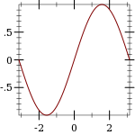
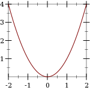
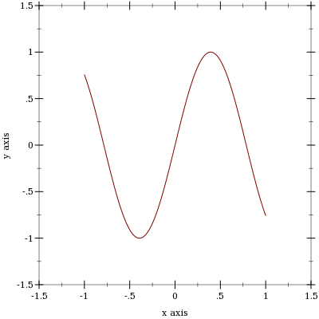

2 2D Plot Procedures
procedure
(plot renderer-tree [ #:x-min x-min #:x-max x-max #:y-min y-min #:y-max y-max #:width width #:height height #:title title #:x-label x-label #:y-label y-label #:legend-anchor legend-anchor #:out-file out-file #:out-kind out-kind]) → (or/c (is-a?/c image-snip%) void?) renderer-tree : (treeof (or/c renderer2d? nonrenderer?)) x-min : (or/c rational? #f) = #f x-max : (or/c rational? #f) = #f y-min : (or/c rational? #f) = #f y-max : (or/c rational? #f) = #f width : exact-positive-integer? = (plot-width) height : exact-positive-integer? = (plot-height) title : (or/c string? #f) = (plot-title) x-label : (or/c string? #f) = (plot-x-label) y-label : (or/c string? #f) = (plot-y-label) legend-anchor : anchor/c = (plot-legend-anchor) out-file : (or/c path-string? output-port? #f) = #f
out-kind : (one-of/c 'auto 'png 'jpeg 'xmb 'xpm 'bmp 'ps 'pdf 'svg) = 'auto
By default, plot produces a Racket value that is displayed as an image and can be manipulated like any other value. For example, they may be put in lists:
> (parameterize ([plot-width 150] [plot-height 150] [plot-x-label #f] [plot-y-label #f]) (list (plot (function sin (- pi) pi)) (plot (function sqr -2 2)))) '( )
When the parameter plot-new-window? is #t, plot opens a new window to display the plot and returns (void).
When #:out-file is given, plot writes the plot to a file using plot-file as well as returning an image-snip% or opening a new window.
When given, the x-min, x-max, y-min and y-max arguments determine the bounds of the plot, but not the bounds of the renderers. For example,
> (plot (function (λ (x) (sin (* 4 x))) -1 1) #:x-min -1.5 #:x-max 1.5 #:y-min -1.5 #:y-max 1.5) 
Here, the renderer draws in [-1,1] × [-1,1], but the plot area is [-1.5,1.5] × [-1.5,1.5].
Deprecated keywords. The #:fgcolor and #:bgcolor keyword arguments are currently supported for backward compatibility, but may not be in the future. Please set the plot-foreground and plot-background parameters instead of using these keyword arguments. The #:lncolor keyword argument is also accepted for backward compatibility but deprecated. It does nothing.
procedure
(plot-file renderer-tree output [ kind] #:<plot-keyword> <plot-keyword> ...) → void? renderer-tree : (treeof (or/c renderer2d? nonrenderer?)) output : (or/c path-string? output-port?)
kind : (one-of/c 'auto 'png 'jpeg 'xmb 'xpm 'bmp 'ps 'pdf 'svg) = 'auto <plot-keyword> : <plot-keyword-contract>
procedure
renderer-tree : (treeof (or/c renderer2d? nonrenderer?))
procedure
(plot-bitmap renderer-tree ...) → (is-a?/c bitmap%)
renderer-tree : (treeof (or/c renderer2d? nonrenderer?))
procedure
(plot-snip renderer-tree ...) → (is-a?/c image-snip%)
renderer-tree : (treeof (or/c renderer2d? nonrenderer?))
procedure
(plot-frame renderer-tree ...) → (is-a?/c frame%)
renderer-tree : (treeof (or/c renderer2d? nonrenderer?))
Use plot-file to save a plot to a file. When creating a JPEG file, the parameter plot-jpeg-quality determines its quality. When creating a PostScript or PDF file, the parameter plot-ps/pdf-interactive? determines whether the user is given a dialog for setting printing parameters. (See post-script-dc% and pdf-dc%.) When kind is 'auto, plot-file tries to determine the kind of file to write from the file name extension.
#lang slideshow (require plot) (plot-font-size (current-font-size)) (plot-width (current-para-width)) (plot-height 600) (plot-background-alpha 1/2) (slide #:title "A 2D Parabola" (plot-pict (function sqr -1 1 #:label "y = x^2")))
Use plot-bitmap to create a bitmap%.
Use plot-frame to create a frame% regardless of the value of plot-new-window?. The frame is initially hidden.
Use plot-snip to create an interactive image-snip% regardless of the value of plot-new-window?.
procedure
(plot/dc renderer-tree dc x y width height [ #:x-min x-min #:x-max x-max #:y-min y-min #:y-max y-max #:title title #:x-label x-label #:y-label y-label #:legend-anchor legend-anchor]) → void? renderer-tree : (treeof (or/c renderer2d? nonrenderer?)) dc : (is-a?/c dc<%>) x : real? y : real? width : (>=/c 0) height : (>=/c 0) x-min : (or/c rational? #f) = #f x-max : (or/c rational? #f) = #f y-min : (or/c rational? #f) = #f y-max : (or/c rational? #f) = #f title : (or/c string? #f) = (plot-title) x-label : (or/c string? #f) = (plot-x-label) y-label : (or/c string? #f) = (plot-y-label) legend-anchor : anchor/c = (plot-legend-anchor)
Every 2D Plot Procedures procedure is defined in terms of plot/dc.
Use this if you need to continually update a plot on a canvas%, or to create other plot-like functions with different backends.